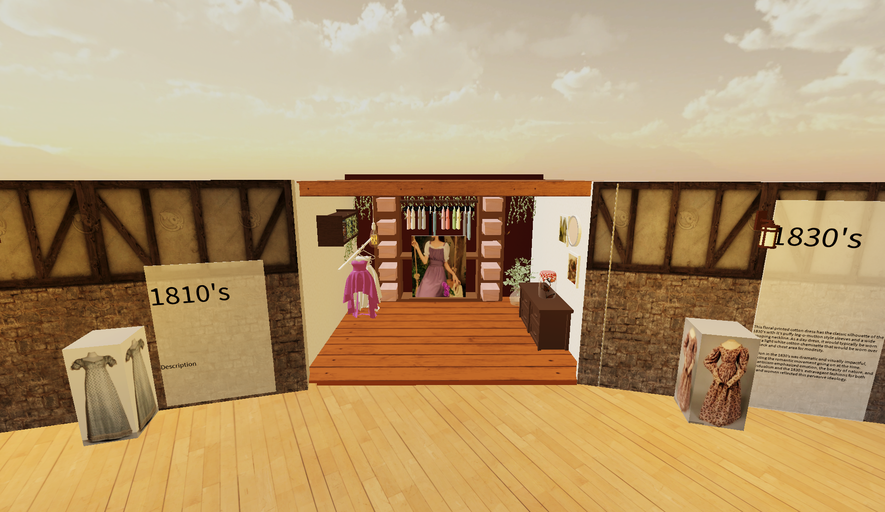
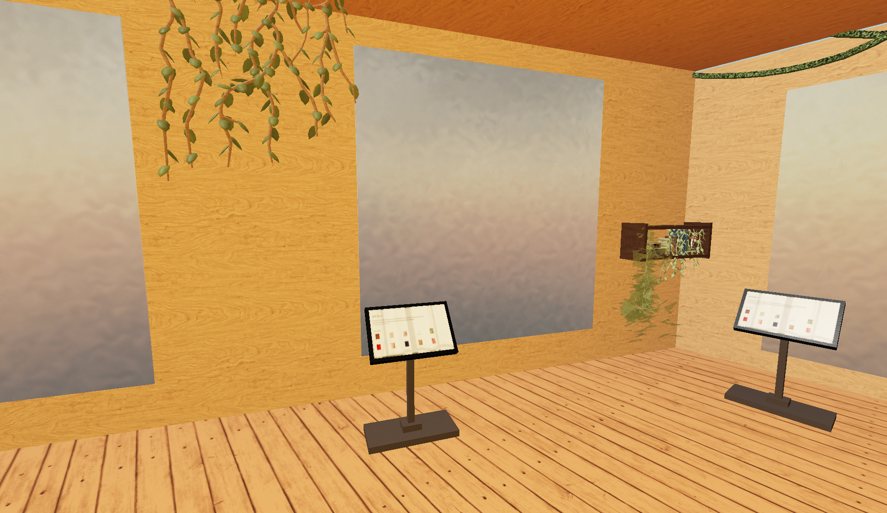
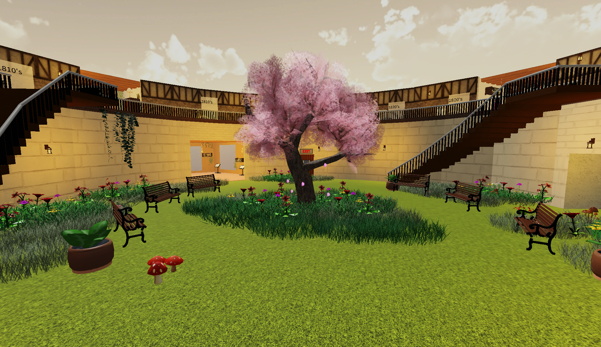

Interactive Cottagecore Museum Experience
Purdue UX Learning Studio
November 1, 2021 - December 13, 2021 (15 Weeks)
Team Size: 6 people
Project Background
Our goal for this project was to create a museum experience based on any period of design while including multiple digital and physical interactive touchpoints. Our team chose cottagecore as our theme for the project.
What is Cottagecore?

These two styles are very similar, yet they are separated by 200 years. Around 2017, the cottagecore movement was started by young adults and teenagers. It involves taking the rural lives lived by people pictured in the left and being idealized by us today.
Escaping from Modern Day
By dressing up like those from hundreds of years ago, people today are also taking themselves to a different place mentally. Cottagecore represents escaping from modern day stresses and problems as people become closer to nature.
Exhibit Goals
- Immerse museum-goers into an environment that lets them escape
- Teach cottagecore history and its influences
- Reflect on origins of modern fashion
Final Design Walkthrough
The exhibit starts in a run down subway station that is meant to mimic the busy lives of people going in the museum.
As you exit the subway, you enter a wide open room covered by a LED dome that creates an outdoor environment. This transition represents escaping from every day life into something more tranquil away from technology.
On the complete opposite side is a board educating people on cottagecore since many people may have been dragged to the exhibit by a friend who is a bit more enthusiastic about the subject.
Because it's on the other side and you can see it directly from the entrance, people are encouraged to go towards it, but will have to pass by other touchpoints on the way and notice them as well.
Along the upper ring, there are several mannequins scattered throughout that have different cottagecore outfits with a description of where they came from. By showing the history, people can draw the connection between the current fashion trends and its direct influences from centuries ago.
Touchpoint 1: Fabric Closet
In between mannequins on the top floor are closets with modern outfits. Juxtaposing these next to the old ones (like in the picture from 1810's and 1830's) creates the connection between present and past so people can see the correlation.
If visitors like the dress, they can pick up a piece of corresponding fabric to take with them to the bottom floor for later.
Touchpoint 2: AR Mirrors
On the bottom floor are mirrors that allow visitors to see themselves with cottagecore outfits augmented on top of them. Users can operate the touchscreen device in front of them to change outfits based on those (and the fabrics) in the exhibit.
Touchpoint 3: Sound Garden
To further the feeling of escapism that the exhibit provides, the center of the whole place hosts the sound garden: an area for visitors to unwind and relax. Sitting on the benches causes flowers in the area to bloom, and different nature sounds play depending on the bench.